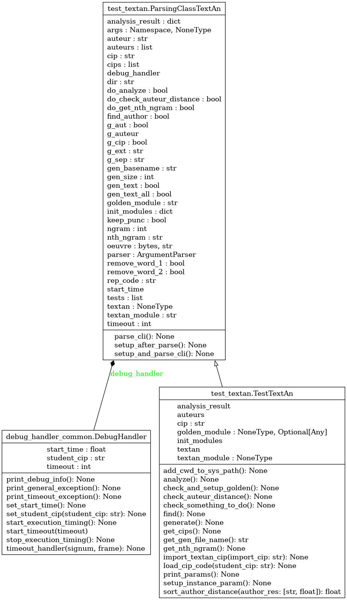

Module test_textan
Diagramme de classe
{kind=link}
Code du module
- class test_textan.ParsingClassTextAn[source]
Bases :
objectConstructeur pour la classe TestTextAn. Initialisation de l’ensemble des éléments requis
- Args :
(void) : Le constructeur lit la ligne de commande et ajuste l’état de l’objet TestTextAn en conséquence
- Returns :
(void) : Au retour, la nouvelle instance de test est prête à être utilisée
- parse_cli() None[source]
- Utilise le module argparse pour :
Enregistrer les commandes à reconnaître
Lire la ligne de commande et créer le champ self.args qui récupère la structure produite
- Returns :
void : Au retour, toutes les commandes reconnues sont comprises dans self.args
- class test_textan.TestTextAn[source]
Bases :
ParsingClassTextAnClasse à utiliser pour valider la résolution de la problématique :
Contient tout le nécessaire pour tester la problématique.
- Pour valider la solution de la problématique, effectuer :
- python test_textan.py -help
Indique tous les arguments et options disponibles
Copyright 2018-2023, F. Mailhot et Université de Sherbrooke
Constructeur pour la classe TestTextAn. Initialisation de l’ensemble des éléments requis
- Args :
(void) : Le constructeur lit la ligne de commande et ajuste l’état de l’objet TestTextAn en conséquence
- Returns :
(void) : Au retour, la nouvelle instance de test est prête à être utilisée
- static add_cwd_to_sys_path() None[source]
- Ajoute le répertoire d’exécution local aux chemins utilisés par le système.
Sinon, si test_textan.py est un lien symbolique, les fichiers textan_CIP1_CIP2.py ne sont pas trouvés
- Args :
(void) : Utilisation des informations système
- Returns :
(void) : Au retour, le répertoire d’exécution est ajouté au chemin système
- analyze() None[source]
Effectue l’analyse des textes fournis (calcul des fréquences pour chacun des auteurs) avec le code étudiant
- Returns :
(void) : Rien n’est retourné : au retour, les textes des auteurs ont été analysés
- check_and_setup_golden() None[source]
Vérifie si une version « golden » doit être conservée
- Args :
(void) : Le nom de la version « golden » est disponible dans le champ self.args
- Returns :
(void) : Au retour, le champ golden_module est initialisé (si nécessaire)
- check_auteur_distance() None[source]
Calcule et imprime la proximité entre chacun des auteurs (nombre entre 0 et 1)
- Returns :
void : Rien n’est retourné : au retour, la distance entre les différents auteurs a été imprimée
- check_something_to_do() None[source]
Vérifie que les paramètres d’entrée indiquent quelque chose à faire
- Args :
(void) : Toute l’information nécessaire est présente dans l’objet
- Returns :
(void) : Au retour, le champ something_to_do indique le statut. S’il n’y a rien à faire, sortie
- find() None[source]
Calcule la proximité d’un certain texte inconnu avec le « style » de chacun des auteurs avec le code étudiant
- Returns :
(void) : Rien n’est retourné : au retour, le texte inconnu a été comparé aux textes des auteurs
- generate() None[source]
Effectue la génération d’un texte aléatoire suivant les statistiques d’un certain auteur (code étudiant)
- Returns :
- (void)Rien n’est retournéau retour, un texte aléatoire a été généré, basé sur les statistiques
d’un seul auteur, ou de l’ensemble des auteurs
- get_cips() None[source]
- Lit le fichier etudiants.txt, trouve les CIPs, et retourne la liste
- Le CIP est obtenu du fichier etudiants.txt, dans le répertoire courant
ou tel qu’indiqué en paramètre (option -rep_code)
- Returns :
(void) : Au retour, tous les cips sont inclus dans la liste self.cips
- get_gen_file_name() str[source]
Définit le nom du fichier à générer
- Returns :
str : Nom du fichier à générer
- get_nth_ngram() None[source]
Obtient le n-ième plus fréquent n-gramme d’un certain auteur avec le code étudiant
- Returns :
(void) : Rien n’est retourné : au retour, le n-ième n-gramme le plus fréquent a été imprimé
- import_textan_cip(import_cip: str) None[source]
Importe le fichier textan_CIP1_CIP2.py, où « CIP1_CIP2 » est passé dans le paramètre import_cip
- Args :
import_cip (str) : Contient « CIP1_CIP2 », les cips pour le code à tester
- Returns :
(void) : Au retour, le module textan_CIP1_CIP2 est importé et remplace le précédent
- load_cip_code(student_cip: str) None[source]
Charge le code étudiant en mémoire, initialise l’instance, initialise le débogage
- Args :
student_cip (str) : Cips de l’ensemble des membres de l’équipe d’APP
- Returns :
(void) : Rien n’est retourné : au retour, le code étudiant a été chargé en mémoire
- print_params() None[source]
- Mode verbose, imprime l’ensemble des paramètres utilisés pour ce test :
Valeur des paramètres par défaut s’ils n’ont pas été modifiés sur la ligne de commande
Ensemble des tests demandés
- Returns :
(void) : Ne fait qu’imprimer les valeurs contenues dans self
- setup_instance_param() None[source]
Définit les paramètres de l’instance (étudiante) à tester
- Returns :
(void) : Rien n’est retourné
- static sort_author_distance(author_res: [<class 'str'>, <class 'float'>]) float[source]
Retourne le deuxième élément du vecteur (auteur, proximité) (utilisé pour le tri de la liste des auteurs)
- Args :
([str, float]) : Liste des auteurs et valeur de proximité avec le texte inconnu (résultat du produit scalaire) pour chacun des auteurs
- Returns :
(float) : Valeur de la proximité de l’auteur avec le texte inconnu
- test_textan.main() None[source]
- Démarrage de l’exécution du code de la problématique, pour l’ensemble des équipes :
Initialise une instance de test
- Pour chaque équipe (séquence de cips) :
Lire le code fourni par l’équipe
Invoquer la méthode d’analyse de texte de l’équipe
Invoquer la méthode de génération de texte aléatoire
Calculer la proximité d’un texte aléatoire avec les textes des auteurs fournis
Trouver le n-ième ngramme le plus fréquent pour un certain auteur
Trouver la distance entre les oeuvres des différents auteurs
Si le code est trop long à s’exécuter (par défaut, 2 minutes), interrompre l’exécution
Attrape toutes les exceptions non-traitées dans le code étudiant
- Args :
(void) : Tout ce qui est nécessaire est défini à l’intérieur de la méthode
- Returns :
(void) : Au retour, l’exécution est terminée
Note
Documentation créée le 13 févr. 2024.